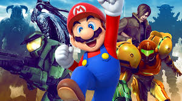

Rock Climbing
I recently joined the Outdoor Pursuits Club at the University of Limerick and tried rock climbing for the first time. The walls are huge, colourful, and it’s actually the tallest climbing wall in Ireland. The instructors are super friendly and showed me how to use the harness and basic techniques. It’s such a great workout for both arms and legs, and I love the mix of challenge and fun each time I go.
Marvel
I’ve loved Marvel ever since I was a little kid. I try to keep up with the storyline and all the movies, though it can be hard to find the time. I love the whole concept of superheroes, their powers, weaknesses, and the villains they face. I also really admire the amazing special effects and how every movie has such an interesting storyline.

Soccer (Hobby)
For Soccer as a hobby, I play as a goalkeeper for my local team, with training and matches every week. There’s nothing like the rush of saving a goal, the face of the striker after saving a impossible shot and the cheering from the teamates and couches.Beyond being a great way to stay fit, soccer is my outlet, it helps me clear my head and release any stress or negative emotions. The mix of physical effort and mental focus lets me forget about everything else for a while.
Soccer (Interest)
For soccer as an interest, I like to keep up with what’s happening in the football world. I always watch my favourite team, West Ham, even though they’re absolutely shite! I find it fascinating to see what clubs are doing in the Premier League and which new players have joined to take on one of the toughest leagues in the world.

Video Games
The longest hobby I’ve had is playing video games. I enjoy a wide variety of games from survival and competitive to creative ones. Gaming gives my brain an outlet, especially after a long and stressful day, and keeps me entertained on quiet days when there’s nothing else to do. Lately, life has gotten a bit busier, so I don’t play as often as I used to, but it’s still one of my favourite pastimes.
Movies
I love watching movies in my free time. I don’t really have a specific favourite moive type, it all depends on the mood I’m in. There’s nothing better than curling up under a warm blanket with a nice cup of tea and a few cheeky snacks. Some of my all-time favourite movies are Avengers: Infinity War and Kung Fu Panda (1).